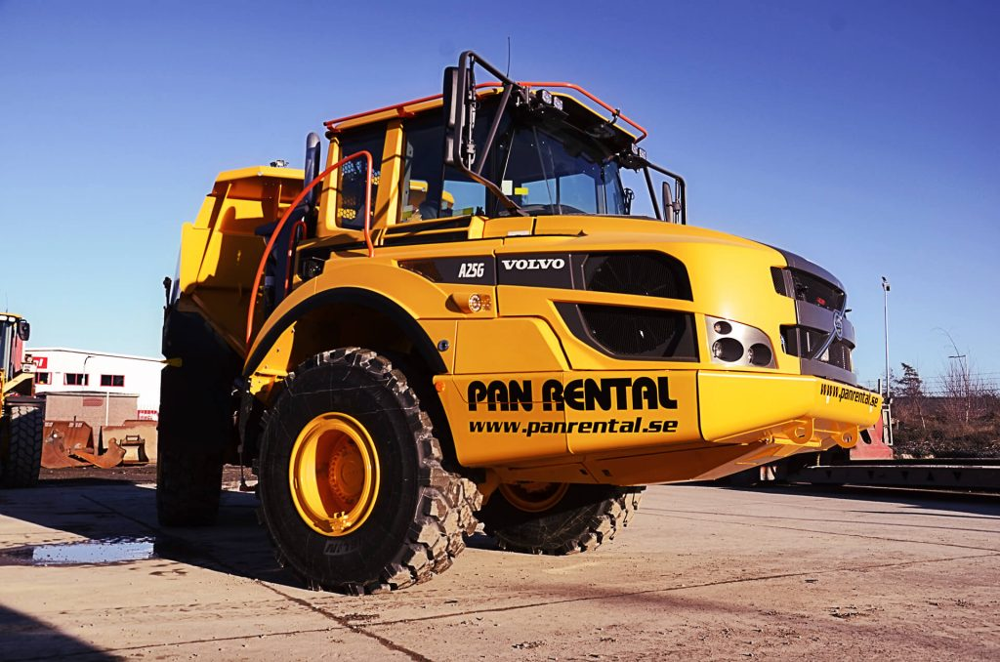

Maskiner
En maskin är enligt klassisk definition en mekanisk anordning som omvandlar energi och/eller utför mekaniskt arbete. En modernare definition inkluderar även anordningar som saknar mekaniska rörelser, såsom elektronisk räknemaskin. En maskin består ofta av flera andra maskiner.
Historiskt krävdes det att en apparat hade rörliga delar för att den skulle klassificeras som en maskin. Elektroniken har dock lett till utvecklingen av anordningar utan rörliga delar som många refererar till som maskiner, exempelvis datorn. Elektroniska maskiner, brukar emellertid kallas för apparat.
Motorer är maskiner som konverterar andra energiformer till mekanisk energi. Exempelvis resulterar expansionen av gaser som orsakas av hettan från en exoterm reaktion i en förbränningsmotor till en rörelse som appliceras på en rörlig komponent, som en kolv eller gasturbin. En motor anses ofta vara en del av en större maskin, såsom en bil eller ett flygplan.
Maskiner är allmänt förekommande i en mängd olika industriella, kommersiella, bostads- och transportapplikationer. De som använder hydraulik är speciellt användbara i tillverkningsindustrin.